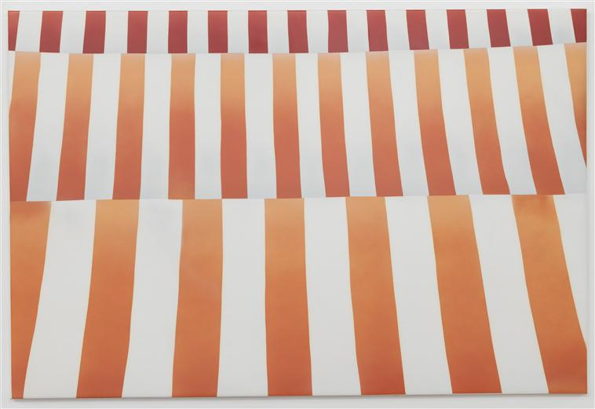
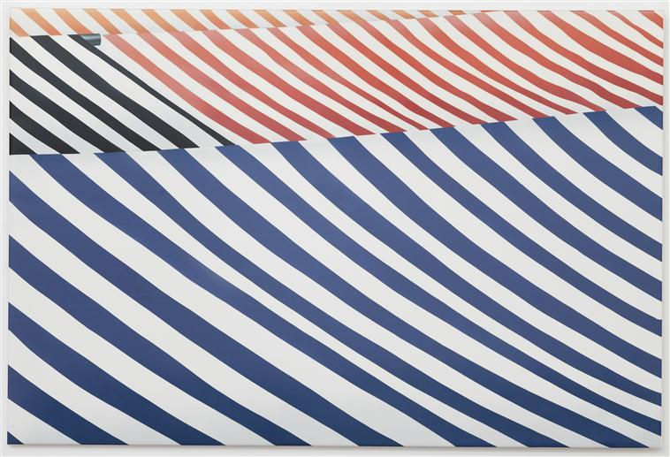
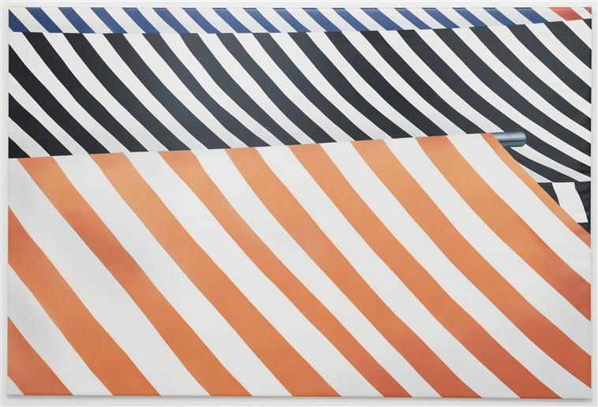
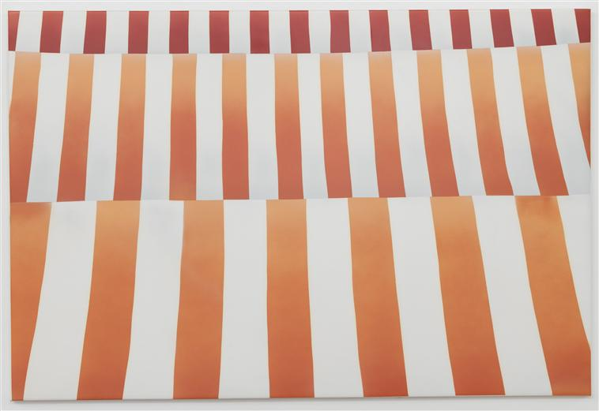
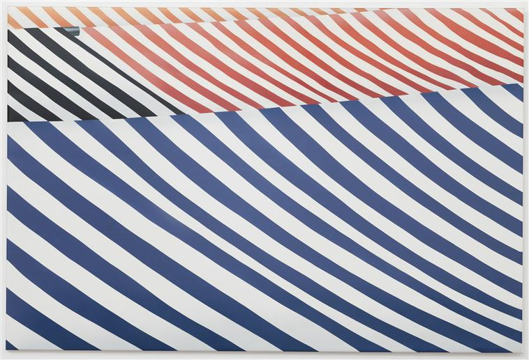

Le séjour, du salon bourgeois à l'espace commun
contexte : comissariat partiel de l'exposition "Le logement pièce par pièce"
institution : maison de l'architecture d'Ile de France
date : septembre 2026
scénographie : Matters.xyz
type : enseignement et recherche
vue d'ensemble de l'exposition
De l’italien salone, soit grande salle, le salon fait son apparition dans les mœurs et dans la pierre au XVII° siècle chez la bourgeoisie récemment constituée comme classe. Parallèlement, la majorité des foyers populaires partagent leurs repas et leur temps libre dans la salle à manger ou salle commune.
De cette double origine – dont la synthèse se fera peut-être via le living-room moderne – le séjour a hérité d’une certaine informité, une indétermination spatiale qui résulte d’une prolifération de ses usages possibles.
Délaissant la composition pour l’ameublement, le séjour est ici ausculté en trois séquences au travers des objets qu’il abrite et non des formes qu’il revêt. Par un inventaire des éléments qui ont traversé l’histoire de cette pièce, tentons de comprendre les fonctions passées, présentes et futures auxquelles le séjour répond.
Allant du général au particulier, ce répertoire de formes d’abord abstraites s’instancie dans des plans historiques avant de s’ouvrir aux visiteur·ices qui peuvent alors participer à cet atlas de nos intériorités.

L'exposition "Tuez vos pères" tenue en novembre 2022 au Blockhaus DY10 (nantes) est l'acte fondateur d'asap. Rassemblant 9 "super-jeunes" architectes, elle les invitait à sélectionner un père spirituel à réinterroger via une production textuelle et graphique.
Précédée par une série de débats en introduction, l'exposition réinvestissait les travaux de divers références pour la nouvelle génération allant de Rossi à Olgiati en passant par Hondelatte.


L'exposition s'organise en trois séquences. En entrée, chaque participant·e a été invité·e à apporter une carte blanche sous la forme d'une production antérieure qui permet de situer son approche et d'expliquer d'où il ou elle parle. Dans un second temps, les productions anti-oedipiennes de chacun·e sontexposéess mettant en regard le texte imprimé à l'occasion dans des petits livrets emportables, la maquette située au centre de l'espace, et l'image géométrale. L'extrémité finale du parcours présente le travail diagrammatique réalisé avec un studio de master de l'ensa Nantes à l'occasion.


Depuis mars 2023, les clubs ASAP sont des soirées d'échange et de débat autour de présentations courtes produites comme des ballons d'essai théoriques par les participant·e·s volontaires. Rassemblant en général une trentaine de personnes, ces moments de discussion offrent aux courageux·ses volontaires un lieu pour tester leurs idées face à un public exigent mais bienveillant et surtout non-institutionnel


Les clubs ont été successivement accueillis par la maison de l'architecture d'ile de france, l'atelier bony mosconi et l'association la générale nord-est à paris. Une session exceptionnelle a été tenue dans la friche Salengro à l'invitation de l'agence d'architecture et d'urbanisme AWP. Depuis 2026 les sessions nantaises ont lieu dans les locaux de mostro.